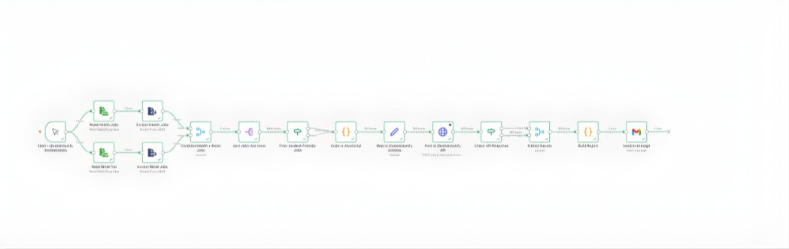

01
Automated Job Aggregation & Publishing Pipeline
End-to-end workflow orchestration (n8n)

The Problem
Manual job sourcing and publishing across multiple employer websites — slow, inconsistent, unscalable.
The Solution
Built a complete n8n automation pipeline that:
- Ingests pre-scraped job data from multiple sources
- Filters for student-friendly and part-time roles
- Deduplicates records using external links
- Maps data to platform API schema
- Posts jobs automatically via authenticated REST API
- Captures success/failure responses
- Generates execution reports and email notifications
Impact
Eliminated manual job posting workflow entirely. Created reusable orchestration framework for future data pipelines. Enabled scheduled and on-demand publishing at scale.
Tools: n8n · JavaScript · REST APIs · Data transformation